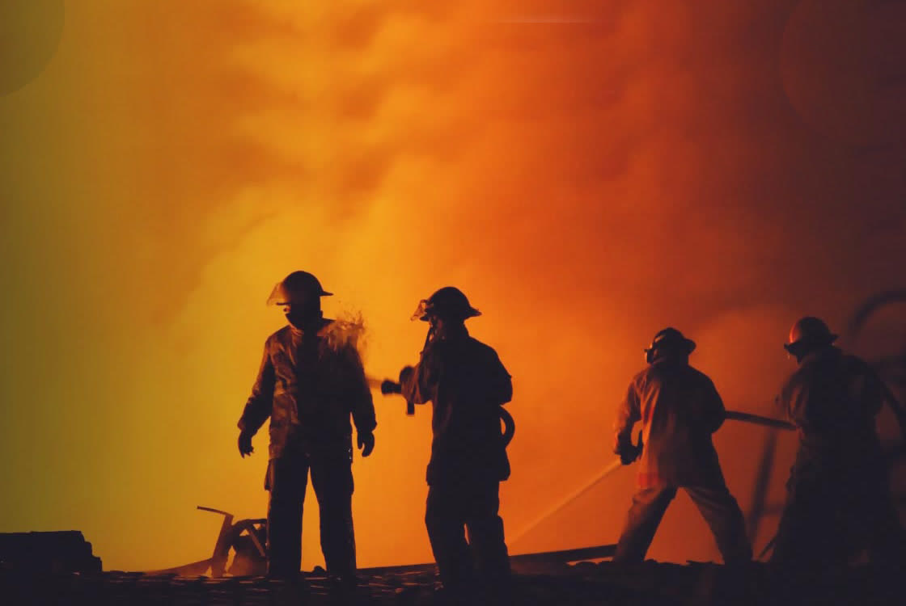
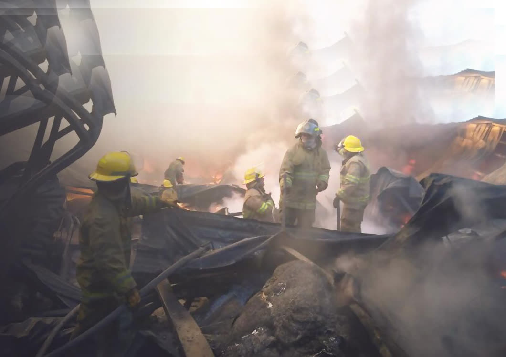
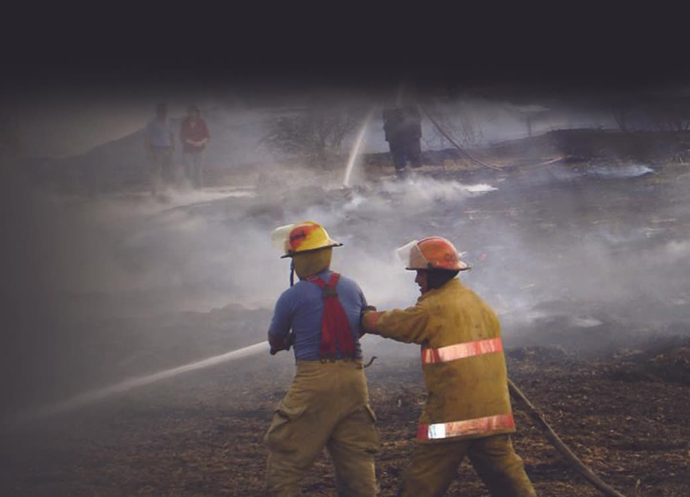
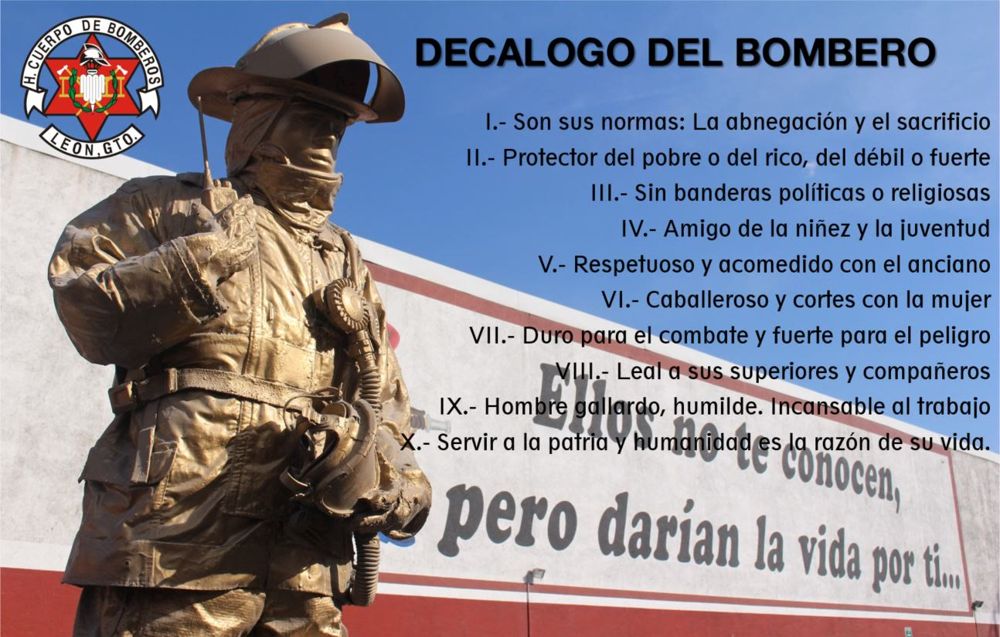

Quiénes son, cómo se forman, a qué se exponen y cómo se cuidan las personas que entran cuando todos los demás salen.

Personal de respuesta a emergencias que protege la vida, los bienes y el entorno.
Su trabajo incluye atender incendios, rescates, accidentes y otras situaciones de riesgo, además de realizar labores de prevención y capacitación comunitaria. En León, Guanajuato, el Heroico Cuerpo de Bomberos forma parte de los servicios municipales de atención de emergencias.
Pueden formar parte de distintos tipos de corporación, según la organización y el tipo de servicio.
Atienden las emergencias de la ciudad.
Cobertura a nivel estado.
Dentro de plantas y empresas.
Protección en aeropuertos.
Brigadas de voluntarios.
El ingreso y las funciones dependen de la convocatoria y las necesidades de cada institución.
Concluido, es el estándar en la mayoría de las convocatorias oficiales en México.
Tras el nivel escolar, se ingresa y aprueba un curso de formación inicial o academia en la estación local.
Licenciatura en Tecnologías Bomberiles y de Emergencias: programas en línea de gestión integral de riesgos, de 9 cuatrimestres (≈3 años).
Cambian según el tipo de emergencia, el lugar y los materiales involucrados.
Quemaduras y estrés térmico.
Inhalación de humo, gases y partículas tóxicas.
Derrumbes, caídas, golpes o atrapamientos.
Accidentes en el traslado o en la escena.
Contacto con electricidad o sustancias peligrosas.
Al cargar equipo o rescatar personas.
Sirenas, motores y equipo.
Por turnos y experiencias traumáticas.

Lesiones musculares por esfuerzo y movimientos bruscos.
Brazos, manos, piernas y pies.
Por cargar equipo y personas.
Por contacto con fuego y superficies calientes.
La frecuencia depende de las tareas, el equipo, el entrenamiento y las condiciones del incidente.
La exposición repetida puede contribuir a su riesgo.
Riesgo identificado de enfermedades del corazón.
Por inhalación de contaminantes.
Por exposición a ruido intenso.
Y otros problemas de salud mental.
Deshidratación o rabdomiólisis: daño muscular que puede afectar los riñones.
Revisar el equipo de protección antes y después de cada servicio, y usarlo correctamente.
Capacitación periódica en combate de incendios, rescate, primeros auxilios, materiales peligrosos y procedimientos operativos.
Trabajar en equipo, respetar la cadena de mando y mantener comunicación constante; no ingresar a zonas peligrosas sin autorización ni respaldo.
Evaluar la escena, identificar riesgos, establecer rutas de salida y seguir el sistema de comando de incidentes.
Cuidar el cuerpo: hidratación, acondicionamiento físico, pausas de recuperación y vigilar signos de agotamiento por calor.
Descontaminar y lavar equipo y ropa después de incidentes con humo o sustancias peligrosas; no llevar contaminantes al hogar.
Asegurar vehículos y la zona de trabajo para prevenir atropellamientos y accidentes.
Reportar de inmediato lesiones, exposiciones y fallas del equipo.

Ellos no te conocen,
pero darían la vida por ti.
Presentación académica. Contenido informativo sobre el oficio de bombero; no es un sitio oficial del Heroico Cuerpo de Bomberos de León. En una emergencia, llama al 911.
Volver al inicio